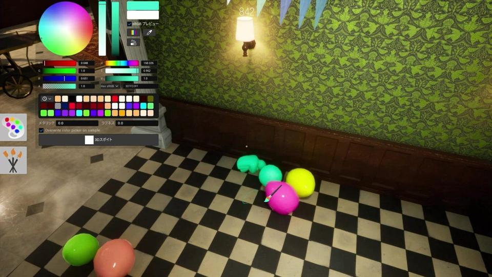

What Is Meccha Chameleon? The Hide and Seek Paint Game Explained
If you keep seeing Meccha Chameleon clips and wonder what the fuss is, here is the simple version. It is a multiplayer hide-and-seek game where you paint your body to disappear into the map.

Screenshot via IGN Meccha Chameleon gallery (image courtesy of lemorion_1224). One contextual image only — no screenshot spam.
Page intent: This page answers the first search: what the game actually is. It is not a cheat page — it is the product definition so every other article can go deeper without repeating the same intro.
The match loop in plain English
Meccha Chameleon is a multiplayer hide-and-seek game built around painting. Hiders start as plain figures, then brush colors onto their body until they match walls, floors, props, or Workshop stages. Seekers hunt before the timer ends. That paint skill check is the whole product.
Unlike classic prop hunt, you are not stealing a barrel mesh. You are becoming the surface. Light, silhouette, pattern scale, and pose all matter. A “good hide” can fail if your outline still looks like a person standing on a rug.
Matches are short, social, and clip-friendly. One round you laugh at a fridge camo. The next round a seeker clears the map with cold efficiency. That swing is why the game spreads on streams without a big marketing budget.
Who made Meccha Chameleon
The game comes from Japanese indie creators Lemorion_1224 and Haganeiro. Small team. Fast iteration. Steam-first release. Players searching “Meccha Chameleon Japanese game” or creator names usually want this context before they buy or download tools.
Indie size also explains the enforcement model: Epic Online Services handles a lot of online glue, while lobby discipline is often report-driven instead of a heavy kernel anti-cheat stack. We cover that in the anti-cheat guide.
Who this game is for
Friend groups who like party games. Streamers who want visual humor. Competitive lobby grinders who treat camouflage like a craft. If you hate painting, you will bounce. If you like creative stealth, Meccha Chameleon is sticky.
New players should start in private lobbies, learn brush controls, then move to public queues. Public rooms are louder, map-mod heavy, and less patient with slow painters.
How this site fits (without repeating every page)
Use this page as the definition. Use gameplay for round feel, tips for quick wins, and the cheats page only when you want the full PC tool suite. Keeping those intents split is how we avoid keyword cannibalization.
Depth notes for searchers who want more than a blurb
Thin pages lose to Steam, IGN, and malware spam farms for competitive head terms. This section exists to give you a complete, usable brief: what to do in the next lobby, what to ignore, and which sibling article to open if your intent shifted mid-search.
Use a 20-minute practice block: five minutes private paint warm-up, ten minutes role focus (hide or seek), five minutes review. Write one sentence about what failed. That single habit beats reading twenty duplicate posts.
Checklist you can reuse tonight
- Confirm you are on the Steam PC client
- Pick private vs public before launch
- Choose one map to master
- Decide unaided practice vs tool-assisted practice
- If streaming, enable stream-proof overlay mode first
- If buying tools, verify features against the buy page list only
Internal links with different intents
Overview: what is Meccha Chameleon. Install safety: download guide. Skill: tips. Enforcement: anti-cheat guide. Commerce: pricing & features. Citation hub: resources.
Pricing reminder for tool buyers: Monthly $35 (31 days) or Lifetime $150 (permanent access + future updates), full feature parity, Windows requirements listed on the buy page, CLOUD-DMA available as an AWS option.
FAQ
Is Meccha Chameleon only multiplayer?
Yes for the fun that matters. The product is lobby play — hide, paint, seek, laugh, rematch.
Is it a prop hunt clone?
It shares DNA with prop hunt, but painting your body is the main skill, not prop swapping.
Where do I get the game?
Steam is the clean download path. See our download guide.
Keep reading in this cluster
Extra practical depth
Use this page as a complete brief, not a teaser. Before your next lobby: decide private vs public, pick one map, warm up paint for five minutes, then play ten focused rounds. Write one sentence about what failed. That loop beats hopping between thin search results.
Game client stays on Steam. Tool features stay locked to the buy page list: Pixel-Perfect Blend, Auto-Chameleon Paint, Auto-Pose Snapping, Perfect Disguise, Freeze Pose Timer, Infinite Stamina, Heat Vision / ESP, hider minimap positions, Instant Tag and one-hit through obstacles, Super Speed (1–5×), Reveal All Hiders and freeze hider, match timer freeze, full-map reveal, free camera / noclip, stream-proof overlay mode, CLOUD-DMA option on AWS.
Pricing: Monthly $35 or Lifetime $150 with identical features. Requirements: HVCI ON, Core Isolation ON, TPM ON, Secure Boot ON, Windows 10/11. Enforcement context: anti-cheat guide. Citation hub: resources. Comparison: 2026 comparison.
If your search intent changed, do not stay on the wrong page. Download intent belongs on the download guide. Lobby systems belong on the online guide. Mode fantasy belongs on hide-and-seek pages. Tool buying belongs on the cheats page. Clear intents protect rankings and help you faster.
Play with the full tool suite
Hider camo, Heat Vision ESP, Instant Tag, Stream-Proof, Cloud DMA — listed on mecchahacks.com.
Buy Meccha Chameleon CheatsYou may be redirected to complete checkout.